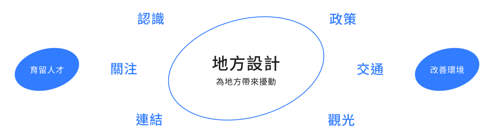
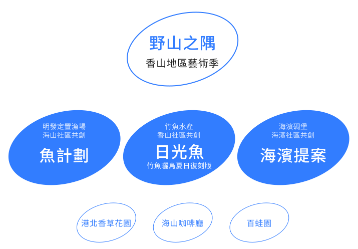
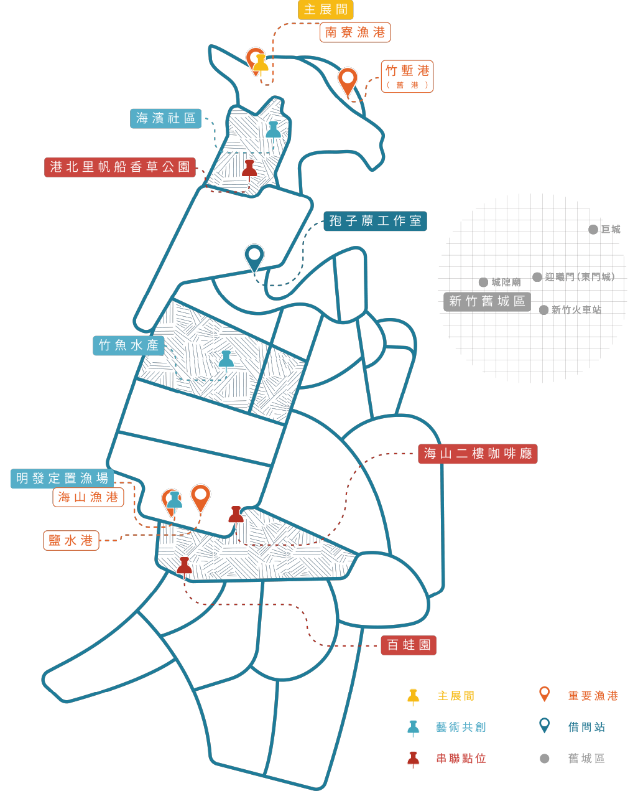

/野山之隅 香山農村藝術季 - 作品理念
以展覽、走讀、藝術季同時市集的方式對地方進行擾動，期望擾動可以不僅影響香山的居民，更深入認識自己的家鄉與土地，更可以留在這片土地上。同時向外影響觀光、交通政策等，讓這片土地變得更好。
三個共創計劃與不同的社區進行合作，不單純作為藝術展覽的展位，更讓居民實際加入創作，與藝術季進行深層的連結。
/設計概念與架構

/展覽架構與地圖


/波光市集主展間
在波光主展間，呼應整體展覽的主題「海邊的生活」，我們以魚市場為設計主軸，設計了販售攤位以及展覽間。展覽間主要講述海邊的生活，包涵「生活」、「生產」以及「生態」。


/日光魚- 竹魚曬烏夏日復刻版
在竹魚水產，我們用和香山社區的長輩一起共創的烏魚子肥皂，試圖復刻曬烏魚子的場面，讓大家在非季節也可以看到曬烏魚子的壯觀場景。


/魚計劃
在明發定置漁場我們與海山社區的長輩合作畫魚，將於放在漁場在賣魚時使用的魚臺上，讓休魚期的7、8月也可以看到壯觀的魚瀑布。


/海濱提案
在海濱社區的碉堡花園，我們擺放了可以讓大家更聊解海濱社區的走讀或是活動提案，並且重新種植整理了小花園。


策展團隊
總體策展 / 孢子蒝工作室 楊雨珊、石乃文、蔡芮閔、蘇佳茹、黃壬煜
波光市集展間設計 / 蘇妍樺、蕭雁琳
暑期實習 / 林恩樂、孔祥錦、蘇妍樺、蕭雁琳、張宭豪
參與單位 / 海濱社區發展協會、香山社區發展協會、海山社區發展協會明發定置漁場、竹魚水產
共創參與 / 陳亮諼、廖予晞、廖于晴
策展指導 / 教育部青年發展署 青年社區參與行動2.0 Changemaker計畫
遊程指導 / 文化部 國立新竹生活美學館 戀戀山海廊帶文化特色計畫
野山隅民 / 呂美琪、李可芸、李玉如、林宜璇、林書豪、侯翔之、許志豪、彭敏絜、楊冠慈、楊惠慈、鄭璘、鍾彤
特別感謝 / 邱星崴、許志豪、鄭明發、謝慧萍、林明昌、會語思、周家靜、高禕騏、王映喆、田宜珍